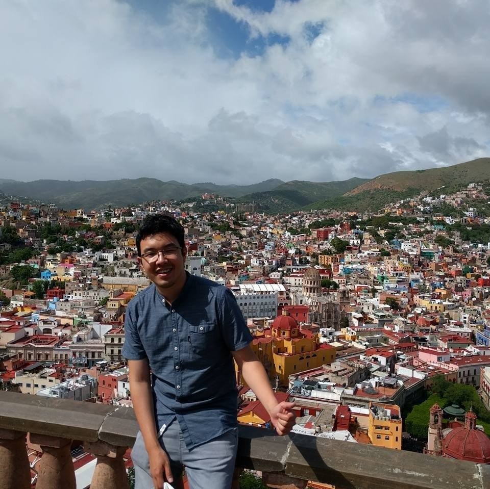

About Me

Born and raised in Bogota, Colombia and living in the US for 12 years. Danilo consider himself as a cosmopolitan guy, able to adapt and share into different types of cultures. California is a big multicultural place and that's make the perfect place for him. Loving to interect and negotiate with other cutlures Danilo holds a BA in International business and a Masters in Sport Journalism in his native country. His interest in technology makes him to enroll to the UCI coding bootcamp with the hope to expand his knowledge to new fields.